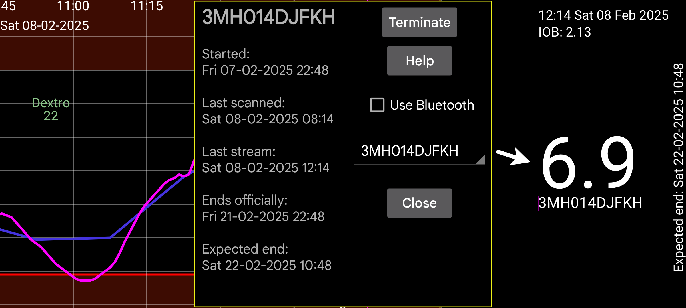

Gives information about the sensors when Juggluco functions as the mirror of the stream values:
Started: time the sensor was started. On Libre sensors this is one hour before the first glucose values.
Last scanned: Last time the sensor was scanned. Also when the sensor is scanned without receiving, data because of a sensor error or replace sensor error, this is counted as scanned.
Last stream: Time stamp of latest glucose measurement received via Bluetooth;
Ends officially: End time as said by the sensor producer.
Expected end: Some sensors last in reality longer than the official end time. Libre 1 and 2 and Dexcom G7/ONE+ last 12 hours longer, Sibionics sensors last nearly 10 days longer. Only Libre 3 sensors don’t last longer then their official end time.
Hide: Hide this curve when checked. Besides unchecking, you can also make the curve visible again by pressing “Show” at the lower right of the screen.
Terminate: Stop receiving glucose values via Bluetooth from this sensor. When you want to use it again, you need to scan the sensor again.
Use Bluetooth: Connect this device directly via Bluetooth with the sensors. You can use this to change which device directly connects with the sensors. It should be turned off in the other device that previously directly connected with the sensor. You also need to change the Mirror settings on both devices so that Stream values are send in the opposite direction. When the other side is a WearOS watch, you can do this with a single button: Left menu→Watch→WearOS config→”Direct sensor-watch connection”.
When using multiple sensors, you can select for which sensor to view information.
Calibrations: If you have specified the blood glucose label in left menu→Settings→Calibration and entered blood glucose measurements with left middle menu→New amount ,which were not excluded, you can press on the “Calibrations” button to get a list of made calibrations. See: https://www.juggluco.nl/Juggluco/index.html#calibration
Warmup: For Sibionics and Linx/Lumiflex/Aidex X sensors you can change the number of minutes of the warmup period. All functions will ignore data during the warm up period: curve on the screen, statistics, exported data and data visible in the web server. Also, retroactively.